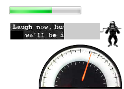

这是一篇译文，抱着学习的心态，第一次尝试翻译，肯定有不少错误，如果你读到这篇译文并发现了错误，敬请在评论中指出，我会尽快更正。原文：Cross Browser HTML5 Progress Bars In Depth
作为web应用开发者，向用户显示正在发生的动作，尤其是显示该动作的进度，是非常棒的。这可以是动画（像Gmail一样，用户每做一件事都会显示加载和初始化的时间），也可以是静态的（像一些购物车应用一样，向用户显示需要核对的订单页面数）。之前我是使用div标签、CSS和一丁点数学知识来创建进度条，现在我喜欢用HTML5的progress标签做这件事情。本文将讨论：在所有的操作系统和浏览器中这个标签progress默认如何渲染，以及如何用CSS给progress标签添加样式，甚至是在不正式支持progress标签的浏览器中。本文还将讨论不同的浏览器实现所带来的一些有趣的限制，并展示一些使用了高级CSS3技术的有趣示例。
The HTML：Simple
下面的HTML是一个进度条的简单示例：
<progress max="100" value="60"> <strong>Progress: 60% done.</strong> </progress>
progress标签内部的HTML代码是为不支持它的浏览器提供的回退。不幸的是，目前为止这包括所有版本的IE和Safari，老版本的Firefox（5.x和以下版本）和Opera（10.x和以下版本）。尽管回退是可接受的，但是我们还是可以做到更进一步：使用Lea Verou开发的非常棒的progress tag polyfill，这将给那些不支持progress的浏览器添加几近完美的支持，除了Safari5及其以下版本，所以，为安全起见，你应该总是输入用于回退的HTML代码。下面的截图显示了跨浏览器时progress的表现。
| Windows 7 | Windows XP | Mac OS X | Ubuntu Linux | |
|---|---|---|---|---|
| Firefox | ||||
| Chrome | ||||
| IE7-9 (polyfill) | N/A | |||
| IE10 | N/A | |||
| Safari 5.1+ (polyfill) | N/A | |||
| Opera | ||||
{kind=link}
注意：
- Firefox和Chrome在同一操作系统上渲染progress的方式相同，例外的是Linux上的Chrome使用自有的样式（感谢Mounir Lamouri的校正）。
- Opera对progress value的颜色渲染总是为绿色（稍后有更多说明）。
- 浏览器使用polyfill渲染的进度条会带有一个漂亮的蓝色渐变效果。
progress有一个叫“indeterminate”的状态，当progress没有value属性时触发。
<progress max="100"> <strong>Progress: 60% done.</strong> </progress>
下面的效果显示了progress当前处于未知状态时的情形（例如，显示下载一个文件所花费时间的进度条，而这个文件是服务器动态生产）。对不同的浏览器来说，这看起来是多么的不同。
| Windows 7 | Windows XP | Mac OS X | Ubuntu Linux | |
|---|---|---|---|---|
| Firefox | ||||
| Chrome | ||||
| IE7-9 (polyfill) | N/A | |||
| IE10 | N/A | |||
| Safari 5.1+ (polyfill) | N/A | |||
| Opera | ||||
注意：
- Opera是唯一一个在模糊状态（indeterminate state）下不做区分且value是0的浏览器。
- 所有浏览器（包括使用polyfill的浏览器）在模糊状态下有动画效果。（这里选择不显示动画，以避免读者发疯 …… 听起来有点糟糕）。
自定义progress的样式
如果你想让progress看起来比较独特，好消息是你可以用任何你想要的方式美化它。但是，你必须注意一些可能把你绊倒的浏览器怪癖 …… 而且这一次，还不只是IE的问题！立即完成下面3-4步，那么就算你在睡梦里也能给progress bars加上样式。
Step 1: Turn off default styling
第一步是在所有浏览器里重置默认样式。
progress, /* All HTML5 progress enabled browsers */
progress[role] /* polyfill */
{
/* Turns off styling - not usually needed, but good to know. */
appearance: none;
-moz-appearance: none;
-webkit-appearance: none;
/* gets rid of default border in Firefox and Opera. */
border: none;
/* Needs to be in here for Safari polyfill so background images work as expected. */
background-size: auto;
/* Dimensions */
width: 400px;
height: 60px;
}
/* Polyfill */
progress[role]:after {
background-image: none; /* removes default background from polyfill */
}
/* Ensure fallback text doesn't appear in polyfill */
progress[role] strong {
display: none;
}
简单说明：移除默认的border值，添加一个特定的宽、高。还添加了两条规则，以移除由polyfill’s stylesheet插入的背景图片。当然，如果你愿意，你也可一直接修改polyfill’s stylesheet（或者你选择不使用polyfill而完全摒弃它）。最后一条规则是确保polyfill不显示回退的内容————假定总是被strong标签包裹，因此，这是你设置默认内容时必须牢记的（如果你不喜欢strong标签作为回退内容的包裹，你也可以使用任何你喜欢的标签）。
要注意的是，appearance属性（且使用了浏览器特有的同类属性）用于重置操作系统默认添加到progress bar上的样式————这看起来真没必要，但是我把它放在这里是为了方便以后参考，万一以后它变成强制性的了呢。
Step 2: The Progress Bar Background
现在把进度条的背景色设为浅红色
progress, /* Firefox */
progress[role][aria-valuenow] { /* Polyfill */
background: #ffeeee !important; /* !important is needed by the polyfill */
}
/* Chrome */
progress::-webkit-progress-bar {
background: #ffeeee;
}
请注意，Firefox和使用polyfill的浏览器，只要给progress标签本身设置背景色就行了，然而在Chrome（我认为还有未来版本的Safari）中需要使用 -webkit-progress-bar 伪类。虽然内嵌在规则中的代码是相同的，但是你却不能把他们的选择器放一条规则中：这样做对Firefox和Opera有破坏作用（为优雅降级，只好如此了）。
Step 3: The Progress bar value
现在把进度条的颜色设为黑色。实际所需的CSS代码比理论上要稍多一点：
/* IE10 */
progress {
color: black;
}
/* Firefox */
progress::-moz-progress-bar {
background: black;
}
/* Chrome */
progress::-webkit-progress-value {
background: black;
}
/* Polyfill */
progress[aria-valuenow]:before {
background: black;
}
是的，需要四条规则，以便也能支持IE10，如果把他们放到一起，对所有平台下的每一种浏览器（包含使用了polyfill的）都有破坏作用，所以需要另外再写三条包含同样声明的规则。
需要留意的是，在Opera 11.52及其以下版本中，你没有办法修改progress bar value的样式。不管你做了什么，始终是相同的绿色。（如果读者知道有例外，对于您的告知，我将不胜感激。还需指出的是，在写作本文时，IE10预览版还不允许用图片来改变progress bar value的样式，只支持使用颜色（color）属性，所以这个例子在IE10预览版中看起来并不如预期那样）
Step 4: The Indeterminate Value
这个部分是可选的。如果我知道我需要为未定的值设置一个样式的话，我就会加上这些规则。（这不是所有应用都需要的）：
/* Firefox */
progress:not([value])::-moz-progress-bar {
background-image: url(../images/indeter.gif);
}
/* Chrome */
progress:not([value])::-webkit-progress-bar {
background-image: url(../images/indeter.gif);
}
/* Polyfill - IE */
progress[role]{
background-image: url(../images/indeter.gif) !important;
}
/* Polyfill - Safari */
progress:not([value]) {
background-image: url(../images/indeter.gif) !important;
background-size: auto; /* Needs to be in here for Safari */
}
尽管这在Opera下工作正常，但是要注意必须把background-size设置为auto，以便覆盖polyfill的默认样式。
demo: http://junyi.me/demo/progress/
这也太基本了吧！我想要高级点（Fancy-Pants™）的进度条.
现在你已知道那些基本的了，那就让我们看一些更复杂、更有趣的进度条：
两图效果（Two Image Effect）
这个进度条使用了相同图片的两个版本（一个灰阶，一个彩色），以区分进度条的背景和前景。
不幸的是，这个例子在Opera和IE10下不起作用，这是因为在Opera和IE10中设置progress bar value的样式时不能使用图片。
demo：http://junyi.me/demo/progress/uam.html
渐变效果（Gradients）
注意，对今天开发者来说，不仅可以使用背景色（background-color）和背景图，还可以在那些支持的浏览器（这不包括IE9及其以下版本）中使用各种各样的渐变。为验证这一点，我把Chris Croyer用div实现的漂亮的进度条从他的博文《CSS3 Progress Bars》摘录过来和基于HTML5的一起放到了这里。
遗憾的是，由于CSS渐变的实现被浏览器厂商使用了供应商特定的前缀，CSS看起来有点长。下面是第一个示例的CSS代码：
/*
* Gradient Shadow
*/
/* All HTML5 progress enabled browsers */
progress.example3 {
/* Turns off styling - not usually needed, but good to know. */
appearance: none;
-moz-appearance: none;
-webkit-appearance: none;
/* gets rid of default border in Firefox and Opera. */
border: solid #cccccc 5px;
border-radius: 10px;
/* Dimensions */
width: 238px;
height: 45px;
}
/* Polyfill */
progress.example3[role]:after {
background-image: none; /* removes default background from polyfill */
}
/*
* Background of the progress bar background
*/
/* Firefox and Polyfill */
progress.example3 {
background: #cccccc !important; /* !important only needed in polyfill */
}
/* Chrome */
progress.example3::-webkit-progress-bar {
background: #cccccc;
}
/*
* Background of the progress bar value
*/
/* Firefox */
progress.example3::-moz-progress-bar {
border-radius: 5px;
background-image: -moz-linear-gradient(
center bottom,
rgb(43,194,83) 37%,
rgb(84,240,84) 69%
);
}
/* Chrome */
progress.example3::-webkit-progress-value {
border-radius: 5px;
background-image: -webkit-gradient(
linear,
left bottom,
left top,
color-stop(0, rgb(43,194,83)),
color-stop(1, rgb(84,240,84))
);
background-image: -webkit-linear-gradient(
center bottom,
rgb(43,194,83) 37%,
rgb(84,240,84) 69%
);
}
/* Polyfill */
progress.example3[aria-valuenow]:before {
border-radius: 5px;
background-image: -moz-linear-gradient(
center bottom,
rgb(43,194,83) 37%,
rgb(84,240,84) 69%
);
background-image: -ms-linear-gradient(
center bottom,
rgb(43,194,83) 37%,
rgb(84,240,84) 69%
);
background-image: -o-linear-gradient(
center bottom,
rgb(43,194,83) 37%,
rgb(84,240,84) 69%
);
}
这个例子在任何版本的IE或Opera中都不起作用（因为IE中仅能改变progress bar value的颜色，不能改变背景图像；Opera中根本不能修改progress的样式）。同时，请注意，我并没有在IE6-9中使用渐变滤镜（Gradient filter）替代CSS3渐变，这是因为可视化滤镜（Visual filter）在类似 :before 或 :after 这样的CSS伪类中不起作用。得了吧。
demo：http://junyi.me/demo/progress/striping.html
猴子（Monkeys）!
What blog post about HTML5 progress tags would be complete without monkeys? 这个猴子会出现在所有浏览器，除了IE8及其以下版本（这个稍后解释）。
向伟大的Banksy致歉，这不是他的猴子，而是一个抓取自GIF动画站点并且使用 André Gil 的超酷工具 Gif2TileSet 转化成的CSS sprite。每当progress bar value改变时，我通过移动sprite这张图的方式让猴子转动（感谢我的朋友和同事 Noel Tibbles 告诉这种技术）。
HTML中需要一个额外的div标签，以便放这个猴子。
<progress class="monkey" min="0" max="100" value="60"></progress> <div class="after"></div>
本想用可替代的 :after（或::after），但是在不使用polyfill的任何浏览器中，progress标签上的这些伪类都不起作用。而且，:before 也是如此。我不知道它为什么不起作用，但不能使用它们来完美除去这个额外的标记，确是憾事。 猴子随progress bar的值改变而转动的CSS代码如下：
progress.monkey[value="0"] + .after{
background: url('./uploads/2013/02/monkeyBlit.gif');
}
progress.monkey[value^="1"] + .after {
background: url('./uploads/2013/02/monkeyBlit.gif') 0 -77px;
}
progress.monkey[value^="2"] + .after {
background: url('./uploads/2013/02/monkeyBlit.gif') 0 -154px;
}
progress.monkey[value^="3"] + .after,
progress.monkey[value="100"] + .after {
background: url('./uploads/2013/02/monkeyBlit.gif') 0 -231px !important;
}
progress.monkey[value^="4"] + .after {
background: url('./uploads/2013/02/monkeyBlit.gif') 0 -308px;
}
progress.monkey[value^="5"] + .after {
background: url('./uploads/2013/02/monkeyBlit.gif') 0 -385px;
}
progress.monkey[value^="6"] + .after {
background: url('./uploads/2013/02/monkeyBlit.gif') 0 -462px;
}
progress.monkey[value^="7"] + .after {
background: url('./uploads/2013/02/monkeyBlit.gif') 0 -539px;
}
progress.monkey[value^="8"] + .after {
background: url('./uploads/2013/02/monkeyBlit.gif') 0 -616px;
}
progress.monkey[value^="9"] + .after {
background: url('./uploads/2013/02/monkeyBlit.gif') 0 -693px;
}
当第一个数字变化时，每条规则都是适用的，这归功于使用了 ^= 属性规则。起作用的原因是progress bar的值范围是0-100，并且按10递增。这个猴子没有出现在IE8及以下浏览器中，是因为它们缺乏对 ^= 属性选择器的支持（但在IE9中它工作的很好）。
如果CSS允许我们，像 Lea Verou 在一篇博文中梦想的那样，联合使用 CSS3 calc() 和 attr() 属性，这将会变得更容易。
*
* Don't try this - it doesn't work in any browser, but it would be nice if it did.
*/
progress.monkey::after {
background-image: url('./uploads/2013/02/monkeyBlit.gif');
background-position-x: 0;
background-position-y: calc(-77 * attr(value), 'px');
}
希望这将会在未来成为现实。
demo：http://junyi.me/demo/progress/blit.html
车速表（Speedometer）
最后一个例子与其他完全不同。怎样用一些高级的CSS3特性把车速表应用到进度条上呢？这个例子可以运行在所有浏览器中，除了IE8-（因缺失对原生CSS3变换（transform）的支持）。
类似于猴子的示例，我在progress标签后面增加了一个额外的div，除非progerss有一个内置的图片指针。
<div id="progressContainer"> <progress id="rot" class="example_r" min="0" max="100" value="60"></progress> <div data-arrow-for="rot" class="arrow"><img src="./uploads/2013/02/hand.png" /></div> </div>
我把这两个标签内嵌到一个相对定位的容器中。这是为了方便我以绝对定位的方式合适地排列进度条和箭头。我把进度条放到了一个半圆中，这个半圆使用border-radius和Flickr用户’listener42′的一张照片的一部分。
progress.example_r {
/* gets rid of default border in Firefox and Opera. */
border: solid 1px black;
display: inline-block;
/* Produces the semi-circle */
border-radius: 238px 238px 0 0;
/* Dimensions */
width: 238px;
height: 126px;
padding: 0;
/* IE needs this to hide the native progress bar value */
color: transparent;
}
同时运用CSS3变换使箭头随progress bar的递增而旋转：
progress.example_r[value="0"] + .arrow {
-moz-transform: rotate(270deg);
-webkit-transform: rotate(270deg);
-o-transform: rotate(270deg);
-ms-transform: rotate(270deg);
}
progress.example_r[value^="1"]:not([value="1"]):not([value="100"]) + .arrow {
-moz-transform: rotate(288deg);
-webkit-transform: rotate(288deg);
-o-transform: rotate(288deg);
-ms-transform: rotate(288deg);
}
progress.example_r[value^="2"]:not([value="2"]) + .arrow {
-moz-transform: rotate(306deg);
-webkit-transform: rotate(306deg);
-o-transform: rotate(306deg);
-ms-transform: rotate(306deg);
}
progress.example_r[value^="3"]:not([value="3"]) + .arrow {
-moz-transform: rotate(324deg);
-webkit-transform: rotate(324deg);
-o-transform: rotate(324deg);
-ms-transform: rotate(324deg);
}
progress.example_r[value^="4"]:not([value="4"]) + .arrow {
-moz-transform: rotate(342deg);
-webkit-transform: rotate(342deg);
-o-transform: rotate(342deg);
-ms-transform: rotate(342deg);
}
progress.example_r[value^="5"]:not([value="5"]) + .arrow {
-moz-transform: rotate(360deg);
-webkit-transform: rotate(360deg);
-o-transform: rotate(360deg);
-ms-transform: rotate(360deg);
}
progress.example_r[value^="6"]:not([value="6"]) + .arrow {
-moz-transform: rotate(378deg);
-webkit-transform: rotate(378deg);
-o-transform: rotate(378deg);
-ms-transform: rotate(378deg);
}
progress.example_r[value^="7"]:not([value="7"]) + .arrow {
-moz-transform: rotate(396deg);
-webkit-transform: rotate(396deg);
-o-transform: rotate(396deg);
-ms-transform: rotate(396deg);
}
progress.example_r[value^="8"]:not([value="8"]) + .arrow {
-moz-transform: rotate(414deg);
-webkit-transform: rotate(414deg);
-o-transform: rotate(414deg);
-ms-transform: rotate(414deg);
}
progress.example_r[value^="9"]:not([value="9"]) + .arrow {
-moz-transform: rotate(432deg);
-webkit-transform: rotate(432deg);
-o-transform: rotate(432deg);
-ms-transform: rotate(432deg);
}
progress.example_r[value="100"] + .arrow {
-moz-transform: rotate(450deg);
-webkit-transform: rotate(450deg);
-o-transform: rotate(450deg);
-ms-transform: rotate(450deg);
}
再说一次，如果能同时使用 calc() 和 attr() ，CSS代码会减少很多，不过，还是得了吧。此外，这个示例在Opera中工作的不是很好，原因是没法关掉progress bar value 的绿色。尽管在IE10中，我们能通过把progress bar的颜色设为透明来隐藏此进度条，但是在使用了此进度条的末尾仍有一条可见的细线。呸…… 
demo：http://junyi.me/demo/progress/rotate.html
缺陷总结
正如前面提及的，我发现浏览器实现 HTML5 progress bar 的方式仍有一些烦恼。
1. 不能在progress元素上使用 :after/::after 或 :before/::before。不清楚这为什么不允许，希望为了可以。
2. Safari 5.0 及一些版本不能使用polyfill，因此你应该一直把回退的HTML代码内嵌在progress标签内。
3. 看起来改变 Opera’s progress bar value 的样式是不可能的，绿色除外。
4. 当你想在IE10中改变 progress bar value 的色彩时，到目前为止，我知道应用背景图是不可能的。
5. 当在 progress bar 上使用 borders 时，会有一个小bug，我已fix，并提交pull request，还自我review了。此时，你可以在github上获取我已修复的版本。